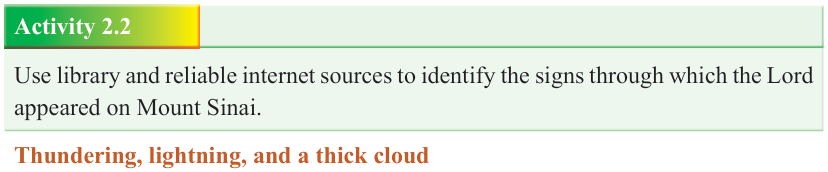

Form Two
Tanzania Institute of Education (TIE)


Bible Knowledge
30

Having observed all divine instructions given to Moses, the encounter between the people of Israel and the Lord God occurred on the third day as expected. The Lord appeared on Mount Sinai in the morning, and the following signs were manifested:
Heavy thundering and lightning; a thick cloud covered the mountain; and the sound of the trumpet was heard very loudly. Because of the soundly trumpet, all the people who were in the camp trembled. Thus, Moses brought the people out of the camp to encounter the presence of God while standing at the foot of the mountain. Now
Mount Sinai was completely covered with the smoke because the LORD descended upon it. Being unusual smoke, it ascended like the smoke of a furnace and the whole mountain quaked greatly.
Activity 2.2
Use library and reliable internet sources to identify the signs through which the Lord appeared on Mount Sinai.
Thundering, lightning, and a thick cloud
These are signs of power and glory that signalled the presence of God. The whole environment spoke of God’s presence in a terrifying form. The sound of the trumpet was equally very loud and the earthquake was terrifying. Each one of these frightening natural phenomenon demonstrated how great and powerful the God of
Israel is. In the midst of this divine encounter, the sound of the trumpet blasted loudly until Moses spoke to the Lord God, and God answered him in an audible voice heard by everyone present. Moses went up to the top of Mount Sinai where he had an encounter with God on behalf of the whole nation of Israel. After the encounter, God instructed Moses to return to his people and warn them against all forms of disobedience and uncleanliness (Exodus 19:21).

Figure 2.1: Moses before the presence of God at Mount Sinai